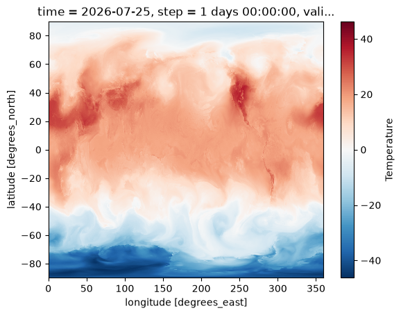
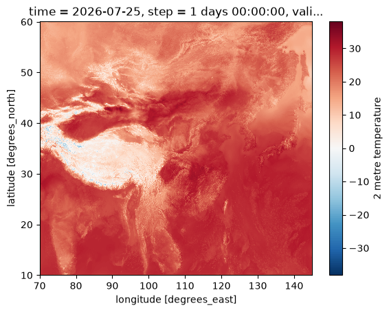

开始使用#
data-notebook 的示例使用项目本地数据目录 data/ 中的数据文件，不直接访问 CMADAAS 挂载点。本节介绍：
如何使用
data-notebook命令将 CMADAAS 业务系统数据拷贝到本地数据目录；如何使用 reki 加载已下载的 GRIB2 数据。
拷贝系统数据#
本地数据目录#
数据按系统分目录保存在项目根目录的 data/ 目录下，每个系统目录中的 metadata.yaml 记录了数据文件信息（起报时次、预报时效、文件列表等）：
data/
├── cma-gfs/
│ ├── metadata.yaml
│ └── grib2/orig/Z_NAFP_C_BABJ_..._02400.grib2
└── cma-meso-1km/
├── metadata.yaml
└── grib2/orig/Z_NAFP_C_BABJ_..._02400.grb2
目前支持的系统：
系统标识 |
说明 |
|---|---|
|
CMA-GFS 全球模式原始分辨率 GRIB2 产品 |
|
CMA-MESO 1km 区域模式 GRIB2 产品 |
下载数据#
数据下载为手动操作，需要在挂载了 CMADAAS（如 /CMADAAS）的环境中执行。下载命令使用 reki 的 find_local_file 在 CMADAAS 目录中定位文件，拷贝到本地 data/<system>/ 目录，并生成 metadata.yaml。
# 下载 CMA-GFS 数据（默认：当前 UTC 时间前 2 天的 00 时起报，24h 时效）
uv run data-notebook data download cma-gfs
# 下载 CMA-MESO 1km 数据
uv run data-notebook data download cma-meso-1km
常用选项：
# 指定起报时次（YYYYMMDDHH）和预报时效
uv run data-notebook data download cma-gfs --start-time 2026072500 --forecast-time 24h
# 指定 CMADAAS 挂载点（默认 /CMADAAS）
uv run data-notebook data download cma-gfs --storage-base /path/to/cmadaas
# 覆盖已存在的本地文件
uv run data-notebook data download cma-gfs --force
查看已下载的数据：
uv run data-notebook data list
Tip
数据根目录默认为项目根目录下的 data/，可用环境变量 DATA_NOTEBOOK_DATA_ROOT 覆盖。
本地数据文件#
Notebook 通过 data_notebook.data 模块访问本地数据。
获取本地数据根目录：
from data_notebook.data import get_data_root
data_root = get_data_root()
data_root
PosixPath('/home/wangdp/project/cedarkit/notebook-project/notebook-devel/ref/data-notebook-project/data-notebook/data')
load_metadata 函数读取系统目录中的 metadata.yaml，返回起报时次、预报时效和文件列表等数据信息：
from data_notebook.data import load_metadata
metadata = load_metadata("cma-gfs")
metadata
{'system': 'cma-gfs',
'description': 'CMA-GFS 全球模式原始分辨率 GRIB2 产品',
'data_type': 'cma_gfs_gmf/grib2/orig',
'source': {'data_class': 'cmadaas', 'storage_base': '/CMADAAS'},
'query': {'start_time': '2026072500', 'forecast_time': '24h'},
'downloaded_at': '2026-07-27T06:46:09+00:00',
'files': [{'path': 'grib2/orig/Z_NAFP_C_BABJ_20260725000000_P_NWPC-GRAPES-GFS-GLB-02400.grib2',
'source_path': '/CMADAAS/DATA/NAFP/NMC/GRAPES-GFS-GLB/2026/20260725/Z_NAFP_C_BABJ_20260725000000_P_NWPC-GRAPES-GFS-GLB-02400.grib2',
'size': 1523461412}]}
get_data_file 函数从 metadata.yaml 中获取数据文件的绝对路径。下面示例获取 CMA-GFS 系统原始分辨率 GRIB2 文件的本地路径：
from data_notebook.data import get_data_file
gfs_grib2_file_path = get_data_file("cma-gfs")
gfs_grib2_file_path
PosixPath('/home/wangdp/project/cedarkit/notebook-project/notebook-devel/ref/data-notebook-project/data-notebook/data/cma-gfs/grib2/orig/Z_NAFP_C_BABJ_20260725000000_P_NWPC-GRAPES-GFS-GLB-02400.grib2')
使用 reki 加载 GRIB2 数据#
reki 使用 ecCodes 从 GRIB2 文件中检索要素场，并返回 xarray.DataArray 对象。
下面示例从已下载的 CMA-GFS GRIB2 产品文件中加载 850hPa 温度场。其中：
parameter参数表示要素名称，t代表温度level_type参数表示层次类型，pl代表等压面层，单位 hPalevel参数表示层次值
from reki.format.grib.eccodes import load_field_from_file
field = load_field_from_file(
gfs_grib2_file_path,
parameter="t",
level_type="pl",
level=850,
lazy=True
)
field
/home/wangdp/project/cedarkit/notebook-project/notebook-devel/ref/data-notebook-project/data-notebook/.venv/lib/python3.14/site-packages/gribapi/__init__.py:23: UserWarning: ecCodes 2.42.0 or higher is recommended. You are running version 2.34.1
warnings.warn(
<xarray.DataArray 't' (latitude: 1440, longitude: 2880)> Size: 33MB
[4147200 values with dtype=float64]
Coordinates:
* latitude (latitude) float64 12kB 89.94 89.81 89.69 ... -89.81 -89.94
* longitude (longitude) float64 23kB 0.0 0.125 0.25 ... 359.6 359.8 359.9
time datetime64[us] 8B 2026-07-25
step timedelta64[us] 8B 1 days
valid_time datetime64[us] 8B 2026-07-26
pl float64 8B 850.0
Attributes: (12/24)
GRIB_edition: 2
GRIB_centre: babj
GRIB_subCentre: 0
GRIB_tablesVersion: 4
GRIB_localTablesVersion: 0
GRIB_dataType: fc
... ...
GRIB_parameterCategory: 0
GRIB_parameterNumber: 0
long_name: Temperature
cemc_name: t
eccodes_name: t
wgrib2_name: TMP可以使用 xarray 提供的一系列功能对要素场进行分析。比如使用 xarray.DataArray.plot() 函数实现快速绘图：
(field - 273.15).plot()
<matplotlib.collections.QuadMesh at 0x757e09d530e0>

加载区域模式数据#
同样的方法也适用于其他系统已下载的数据。下面示例从 CMA-MESO 1km 的 GRIB2 文件中加载 2 米温度场，其中 heightAboveGround 表示距地面高度层，单位米：
meso_grib2_file_path = get_data_file("cma-meso-1km")
meso_field = load_field_from_file(
meso_grib2_file_path,
parameter="t",
level_type="heightAboveGround",
level=2,
lazy=True
)
meso_field
<xarray.DataArray 't' (latitude: 5011, longitude: 7501)> Size: 301MB
[37587511 values with dtype=float64]
Coordinates:
* latitude (latitude) float64 40kB 60.1 60.09 60.08 ... 10.01 10.0
* longitude (longitude) float64 60kB 70.0 70.01 70.02 ... 145.0 145.0
time datetime64[us] 8B 2026-07-25
step timedelta64[us] 8B 1 days
valid_time datetime64[us] 8B 2026-07-26
heightAboveGround int64 8B 2
Attributes: (12/24)
GRIB_edition: 2
GRIB_centre: babj
GRIB_subCentre: 0
GRIB_tablesVersion: 4
GRIB_localTablesVersion: 0
GRIB_dataType: fc
... ...
GRIB_parameterCategory: 0
GRIB_parameterNumber: 0
long_name: 2 metre temperature
cemc_name: t2m
eccodes_name: 2t
wgrib2_name: TMP同样可以使用 xarray.DataArray.plot() 快速查看要素场分布：
(meso_field - 273.15).plot()
<matplotlib.collections.QuadMesh at 0x757e07bf8f50>
